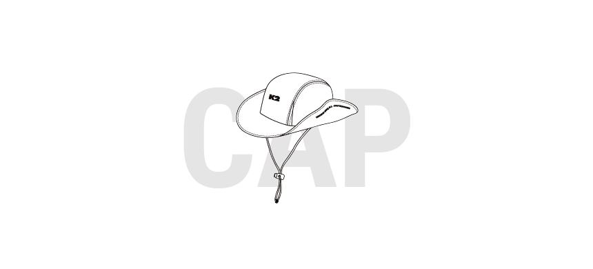
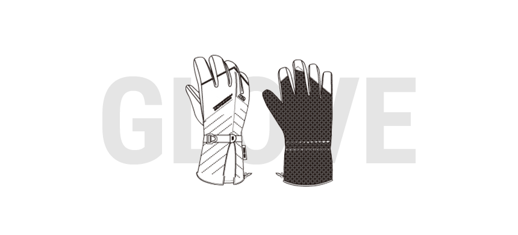
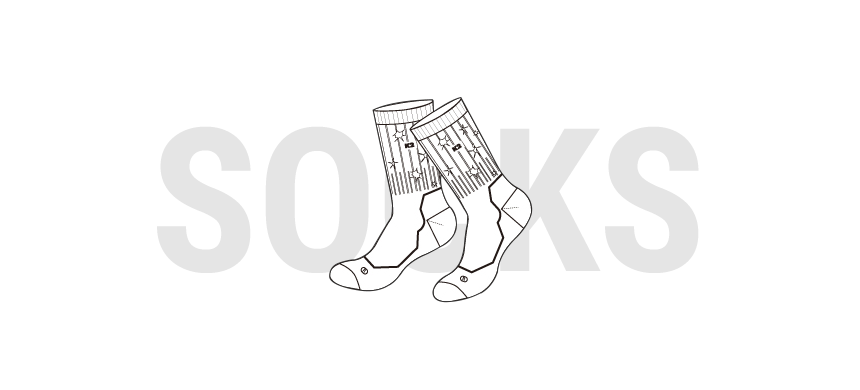
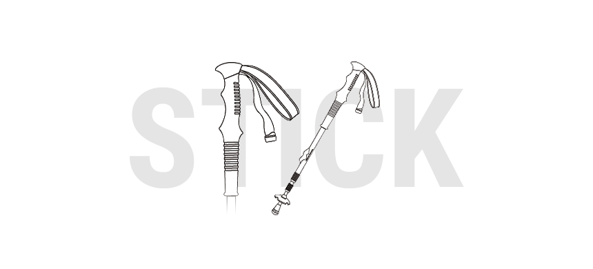
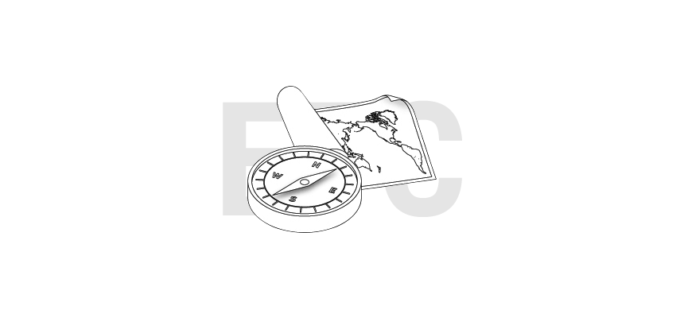

등산용 액세서리 구입요령 및 선택요령
등산용 액세서리는 등산의류와 같이 산행시 우리의 몸을 보호시켜주고, 기본체온을 유지시켜줍니다. 착용시 심미성도 중요하지만, 기후와 산행조건에 따라 어울리는 기능성을 잘 선택하여 착용하는 것이 가장 중요합니다.

[TIP] 갑작스러운 우천 및 폭설, 햇빛차단, 보온성, 통풍성을 중요시 하여 용도에 따라 기능성 소재, 챙길이, 통기성을 고려하여 선정함




등산장비는 자연 속에서 인간의 건강과 생명을 유지시켜 주는 도구로서 매우 중요한 역할을 합니다. 더욱이 산은 일상적인 주거공간에 비해 혹독한 자연조건과 기상변화 등 수많은 위험을 간직하고 있습니다. 따라서 등산장비는 안전하고 쾌적한 산행을 위해서 필요한 기능과 내구성을 지니고 있어야 합니다. 장비의 구입은 산행경력을 늘려가면서 경험과 지식이 쌓일 때마다 신중히 하나씩 준비하는것이 바람직합니다.